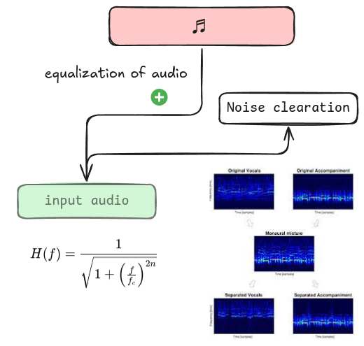

Memrinc is a dubbing machine learning project made by Sangram Patil and
developed by friend Pruthviraj Pawar. It's an advanced dubbing academic
model that, although not perfectly trained, is significantly better than
others.
Architecture
Memrinc's architecture is based on a machine learning model that utilizes a combination of natural language processing (NLP) and speech recognition techniques. The model is trained on a large dataset of audio and text files, allowing it to learn the patterns and relationships between spoken words and their corresponding text representations.

To get input audio, we use libraries like MoviePy or PyDub to extract audio from video files. We then use our model to extract the audio features and transcribe the spoken words into text.
from moviepy.editor import *
# Load the video file
video = VideoFileClip("path_to_your_video_file.mp4")
# Extract the audio from the video
audio = video.audio
# Write the audio to a file
audio.write_audiofile("extracted_audio.mp3")
The speech waveform is a combination of harmonics, fundamental frequency, and formant filters:
The formula combines sinusoidal waves and resonant filters. The term \( A_n \sin(2\pi n f_0 t) \)
represents harmonics derived from the fundamental frequency \( f_0 \), where \( n \in \mathbb{Z}^+ \)
scales periodic contributions. Resonant filters, modeled as \( \frac{1}{1 + \left(\frac{f - f_i}{\Delta f_i}\right)^2} \),
refine these harmonics by emphasizing formants \( f_i \), which are shaped by bandwidth \( \Delta f_i \).
The summation ensures \( s(t) \) synthesizes tonal and resonant features, combining harmonic complexity and
spectral energy.
Key Mathematical Components:
\( 2\pi n f_0 \): Governs periodicity and harmonic structure.
\( \prod \): Ensures filter application across all formants \( i \).
Memrinc Dubbing First 13 Sec Small SAND5150X Model
Main Actor
The main actor in the anime.
Audio Preview:
Audio Ganarations Accoding to Main Actor Audio
Demo Preview:
Memrinc is real worth it, and its potential to revolutionize the entertainment industry is vast. For instance, Memrinc can be used to:
Memrinc's Potential
Memrinc is real worth it, and its potential to revolutionize the entertainment industry is vast. For instance, Memrinc can be used to automate the dubbing process for movies and TV shows, reducing production costs and time. This can be achieved by utilizing Memrinc's advanced dubbing capabilities, which can accurately translate spoken words into different languages, allowing for a more efficient and cost-effective production process. Furthermore, Memrinc can also be used to enable real-time language translation for live events, such as concerts and conferences, providing a more immersive experience for attendees who may not be fluent in the language being spoken.
In conclusion, Memrinc is a revolutionary technology that has the potential to transform the entertainment industry. By leveraging Memrinc's advanced dubbing capabilities, the entertainment industry can unlock new opportunities for creative expression, global reach, and audience engagement. Whether it's automating the dubbing process for movies and TV shows, enabling real-time language translation for live events, creating personalized audio content for video games, or enhancing accessibility for people with hearing impairments, Memrinc is the perfect solution for any entertainment industry professional looking to take their content to the next level.
We are currently raising funding to further advance this model. If you're interested in learning more about our project or would like to discuss potential business opportunities, please don't hesitate to reach out to us through LinkedIn or Email.